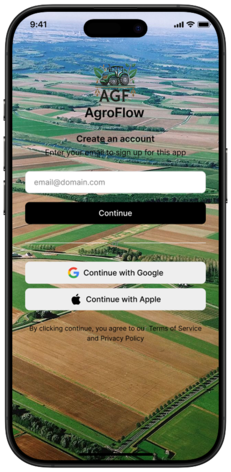
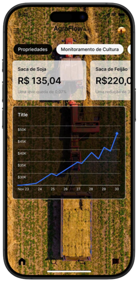
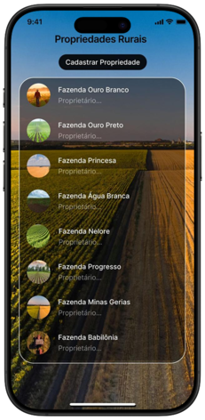
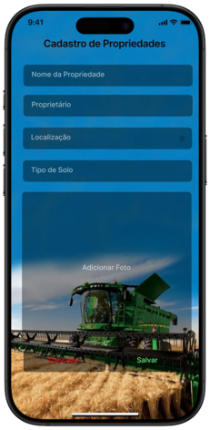
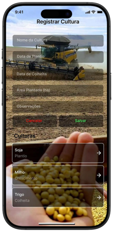
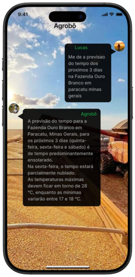

AgroFlow
Veja o AgroFlow em Ação
     
Principais Funcionalidades
Gerenciamento de Propriedades
Registro de Culturas
Controle de Estoque
Integração com IA
Cadastro de Insumos
Dashboard Financeiro
Baixar App
Ver Demonstração
+5.000
Usuários Ativos
+20.000
Propriedades Gerenciadas
IA Integrada
Otimização de Processos